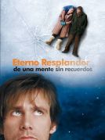
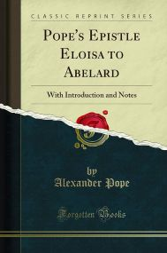

Estrenada en marzo de 2004, Eterno resplandor de una mente sin recuerdos (título original en inglés: Eternal Sunshine of the Spotless Mind; distribuida en España como ¡Olvídate de mí!) se ha consolidado como una de las obras cinematográficas más influyentes y singulares del siglo XXI. Dirigida por el cineasta francés Michel Gondry y escrita por el guionista estadounidense Charlie Kaufman —a partir de una historia concebida originalmente junto al artista visual Pierre Bismuth—, la cinta articula de manera orgánica los códigos del drama romántico, el thriller psicológico y la ciencia ficción especulativa (Wikipedia, 2026). Con una duración de 107 minutos y un presupuesto modesto de veinte millones de dólares, la película alcanzó tanto el respaldo de la taquilla internacional como el aplauso unánime de la crítica especializada, obteniendo el Premio Óscar al Mejor Guion Original en la 77.ª edición de los premios de la Academia y consolidando su estatus como película de culto contemporánea (Wikipedia, 2026).
Desde su propio título, la película establece un diálogo directo con la tradición literaria clásica. La expresión «eterno resplandor de la mente inmaculada» proviene de un verso del poema Eloisa to Abelard (1717), escrito por el poeta inglés Alexander Pope, en el cual se exalta la aparente dicha de la vestal inocente que olvida el mundo y es por el mundo olvidada (Bertea, 2022, p. 19; Scudeler, 2024). En el filme, este pasaje es recitado en voz alta por Mary Svevo (Kirsten Dunst), la ingenua recepcionista de la clínica Lacuna, quien interpreta el olvido inducido como una forma de pureza espiritual y alivio definitivo frente al sufrimiento amoroso (Scudeler, 2024).

Sin embargo, tanto Kaufman como Gondry utilizan esta cita poética desde una perspectiva profundamente irónica. A diferencia de las grandes producciones de ciencia ficción centradas en el despliegue tecnológico, el guion reduce el aparato científico a un elemento doméstico y casi precario para concentrarse en una interrogante íntima y universal: ¿qué quedaría de nuestra identidad si pudiéramos extirpar quirúrgicamente los recuerdos de una relación que nos hirió? Como señala la ensayista Julieta Greco (2024), aunque la premisa pertenece formalmente al terreno de lo fantástico, resulta perturbadoramente verosímil porque conecta con un impulso cotidiano de toda ruptura: el deseo de deshacerse de cartas, fotografías, regalos y mensajes con la ilusión de que, al eliminar los rastros materiales del otro, desaparecerá también el dolor de su ausencia.
A más de dos décadas de su estreno, la obra conserva una vigencia extraordinaria porque interpela directamente la cultura contemporánea de la inmediatez y la evasión emocional. En una época acostumbrada a buscar soluciones rápidas y farmacológicas o digitales para el malestar afectivo, Eterno resplandor de una mente sin recuerdos desmonta el mito del amor idealizado sin caer en el cinismo. Tal como destaca la comunidad cinéfila y crítica en espacios de análisis cinematográfico (X-BabyGhoul, 2025), la película logra que el espectador experimente desde adentro la desorientación de perder la propia historia, demostrando que el valor de un vínculo humano no reside únicamente en su desenlace, sino en la totalidad de lo vivido
Es por eso, que se analiza y comenta tres ejes generales de la película: en primer lugar, el desarrollo argumental de la historia y su particular estructura temporal; en segundo lugar, su reflexión filosófica y psicológica sobre el amor, el duelo y la memoria; y finalmente, los rasgos estilísticos, visuales, musicales e interpretativos que la distinguen dentro del cine moderno.